白馬大仏/新潟県糸魚川市
長野の山奥に大仏がある、という話をずいぶん前に聞いたことがあった。
その名は白馬大仏。長野の白馬といえば長野オリンピックのジャンプ競技が行なわれたところ。
あの原田選手が「よかったねぇ〜。みんな頑張ったよぉぉぉ、ふなぁきぃぃぃぃ・・・」とやっていたところである。
・・・などと考えていたら、白馬村ではなくその北の長野県小谷村と更に北の新潟県糸魚川市の県境近くの新潟側に位置しているということが判明。
白馬大仏は新潟県にあったのだ。
で、さらに調べてみると従来の小谷村〜糸魚川間のルートが平成7年に起きた大規模な土砂災害のため通行止め（2002年10月現在）になっており、代わりに旧道と平行してトンネルが出来た。白馬大仏はこの旧道沿いに位置しているので、長野県側から車でアクセスする場合には一回トンネルを通って糸魚川市に入ってさらに旧道を長野側に向かって行くというルートになる。
あ、別に行く予定がない人にはどうでもいい話しでしたね。
とにかく物凄く意表をついたロケーションにあるので、ここに大仏があると知らない人が夜に通りかかったらさぞかしびっくりするだろうと思うが、実際はこの先1キロ程で旧道は通行止めになっているのでここを通り過ぎる人はいない。大仏見に来るか温泉に入りに来る人以外だれもここまで来ないのだ。ある意味秘境大仏といえるかもしれない。
じゃあ大仏見に来る人と温泉に入りに来る人はどれ位いるのかといえば、それは何とも言えません・・・
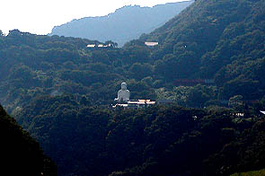 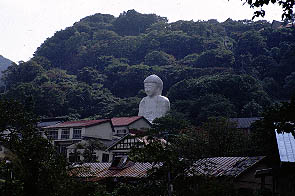
で、トンネルを抜け、旧道を小谷村方面に向かって車を走らせること数キロ。山の中に白いモノが見えてくる。
白馬大仏である。
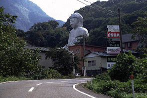
大仏へのアプローチ。手前の2階建ての建物を遥かに凌ぐ威容が見て取れる。
高さは台座込みで23.5メートル。中々立派な大仏さんだ。
看板に白馬温泉と見える。大仏は温泉旅館の一画にあるのだ。
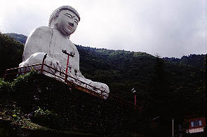 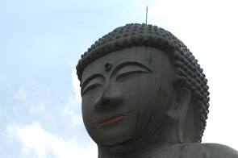
・・・イイ顔してますねえ〜。
何というか、ヘタウマ一歩手前の微妙〜な造りで珍大仏としてはストライクゾーンぎりぎりといったところである。
眉間の白毫と目玉はヒスイ。口はメノウがはめ込まれているそうだ。もちろん下から見上げても判るはずもないのだが。
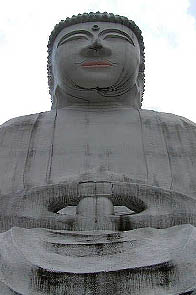 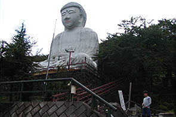
完成は昭和47年。その割には綺麗なのは近年塗り替えたからだろう。でもアゴの下に変なヒゲが。
それと大仏への階段が崩れてて危ないんですけど・・・
階段には立て札があって無断で中に入るな、的な事が書いてあったので旅館で拝観料を払う。
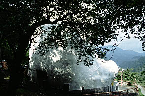
大仏の背後に回るとお尻の辺りに入口がある。
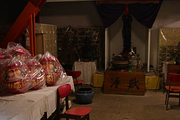 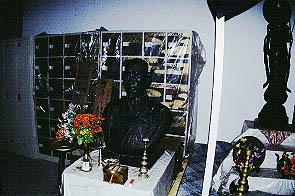
鉄の扉を開けて中に入ると正面に観音像を祭った祭壇がある。観音像の左にはこの大仏の建設者であるお方の胸像が。
このお方、白馬温泉の開祖（つまり温泉掘り当てた人、っていう事か？）であり、宗教法人白馬大仏教管長でもある。
恐らく温泉宿を経営していて客寄せのために大仏を建てて、ついでに宗教法人化、ってな感じだとおもいます。多分。
内部には納骨用のロッカーがビニールを掛けられたまま雑然と置かれていた。
これから納骨堂にするのか、納骨堂にしようと思ったけど頓挫したのかは謎であるが恐らく後者の方だと思う。
ビニール袋にいれられた両目が入っていないダルマが何となく白馬大仏の現在を象徴しているような、いないような・・・
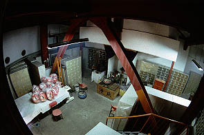
階段から一階を見下ろすとこんな感じ。
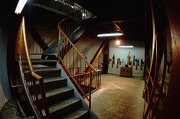
で、２階。ガランとした中に観音像が幾つか並んでいる。筋交い状の鉄骨がむき出しになっている。
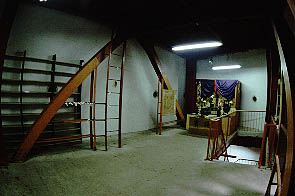
さらに階段を登って3階。ここで階段は終わっている。
入場券の裏には「内部5階にして展望絶佳」とあったので、閉鎖してしまったのだろう。
そういえば入場券の白馬大仏の写真を見るとあちこちに丸い覗き窓がるが、現在はそれも外側から塗り込められている。
3階の写真の祭壇の左右壁面にある丸い穴がそれである。塞がれていて外は見えない。写真で見ると3階は丁度大仏さんの肩の辺りだ。
おっと。
3階の壁面に思わせぶりな鉄梯子があるじゃああ〜りませんか。早速登ってみましょう。
・・・と思ったら板で塞がれ鍵が掛かっていた。ので、板の隙間にカメラのレンズだけ突っ込み撮ってみました。
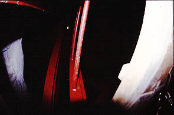
・・・コレがその写真である。魚眼レンズなので歪んでいて中は暗いが梯子がさらに5階まで延びているのが判る。
あとは・・・え〜と、それだけですね。
大仏の後ろから見た風景。
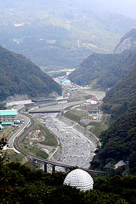
眼下の姫川は土砂災害の際に異常増水し、道路はおろか平行するJR大糸線の路線までもが水没したという。
大仏さんはその風景をどんな思いで眺めていたのだろう。
4階5階どころかその下の階まで閉鎖されそうな雰囲気の何とも寂し気な大仏さんだった。
とはいっても塗り替え等をしているわけだから何らかの一発逆転の作戦を考えているのかも知れない。
頑張れ！白馬大仏。
というわけで、白馬大仏＆温泉を勝手に宣伝。かつての丸窓付き大仏の写真あり。
白馬観光ホテル
コアな大仏マニアなら必見。白馬大仏へGO！
2002.10.
珍寺大道場 HOME